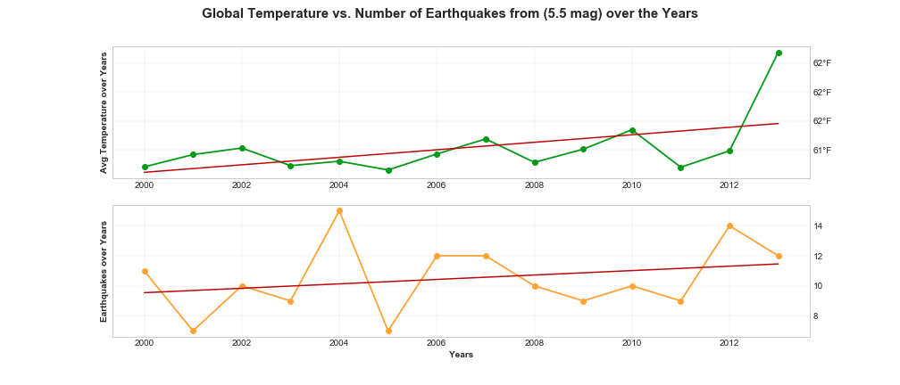
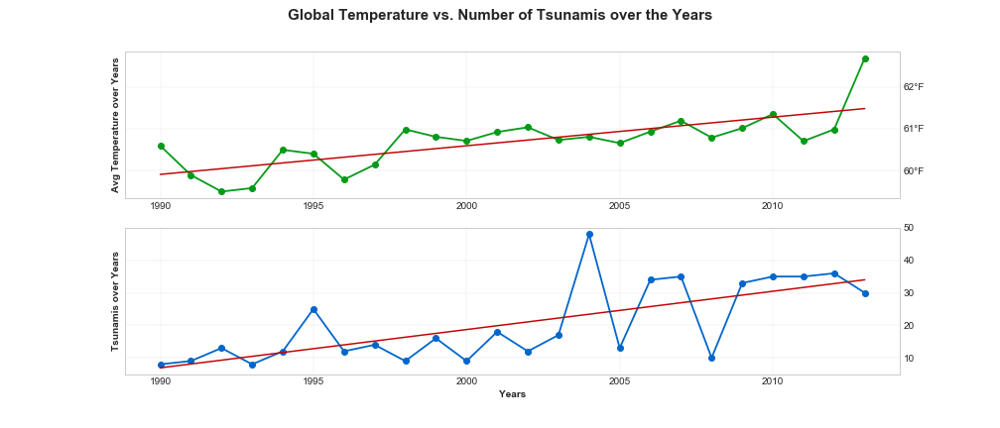
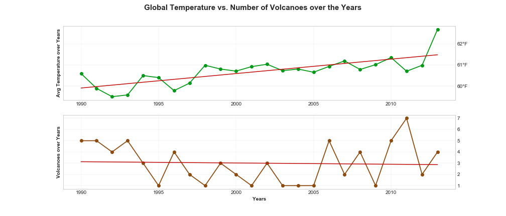

Natural Disasters vs. Global Temperature Changes
The aim of this project is to analyze if change in land temperature over years has an effect on natural disasters, the amount of events and the magnitude of their effect.
On this page, fours graphs represent the relationship between the amount of natural disasters and climate changes.

Melting ice masses change the pressures on the underlying earth, which can lead to earthquakes and tsunamis, but that’s just the beginning. There is a study suggesting that we could see more earthquakes in Greenland in coming decades. Earthquakes happens in the world every day. This is quite a frequent disaster in nature. Since this happens a lot, we decided to focus only on earthquakes with more than 5.5 mag. from 2000 to 2013. Does global warming affects on the number of earthquakes? On this graph we want to show how global warming has affected on the amount of earthquakes over the years.

Most tsunami are caused by large earthquakes on the sea floor when slabs of rock move past each other suddenly, causing the overlying water to move. In addition, climate change may cause tsunamis directly. On this graph we want to show how global warming has affected on the amount of tsunamis over the years.

Does global warming reacts on amount of Volcanic eruption? "Volcanic eruptions of this magnitude can impact global climate, reducing the amount of solar radiation reaching the Earth's surface, lowering temperatures in the troposphere, and changing atmospheric circulation patterns. The extent to which this occurs is an ongoing debate." On this graph we want to show how global warming has affected on the amount of volcanoes over the years.